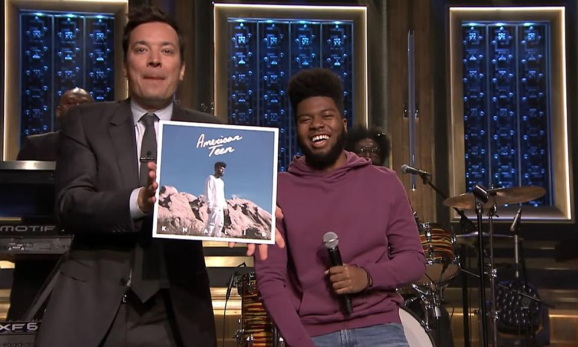
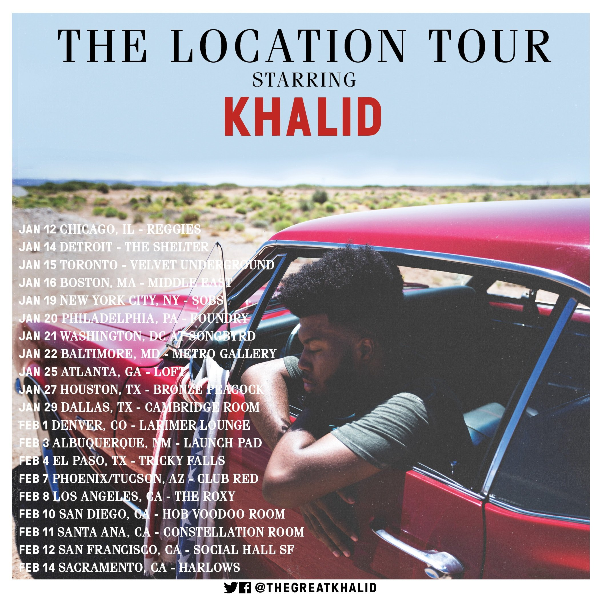
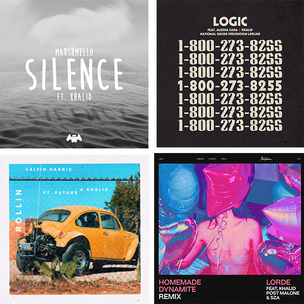
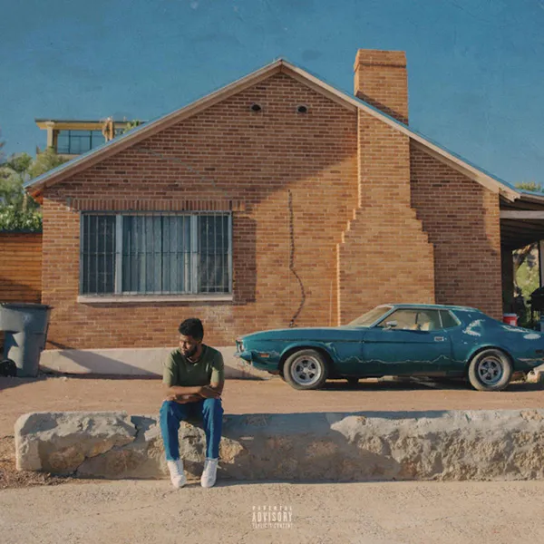
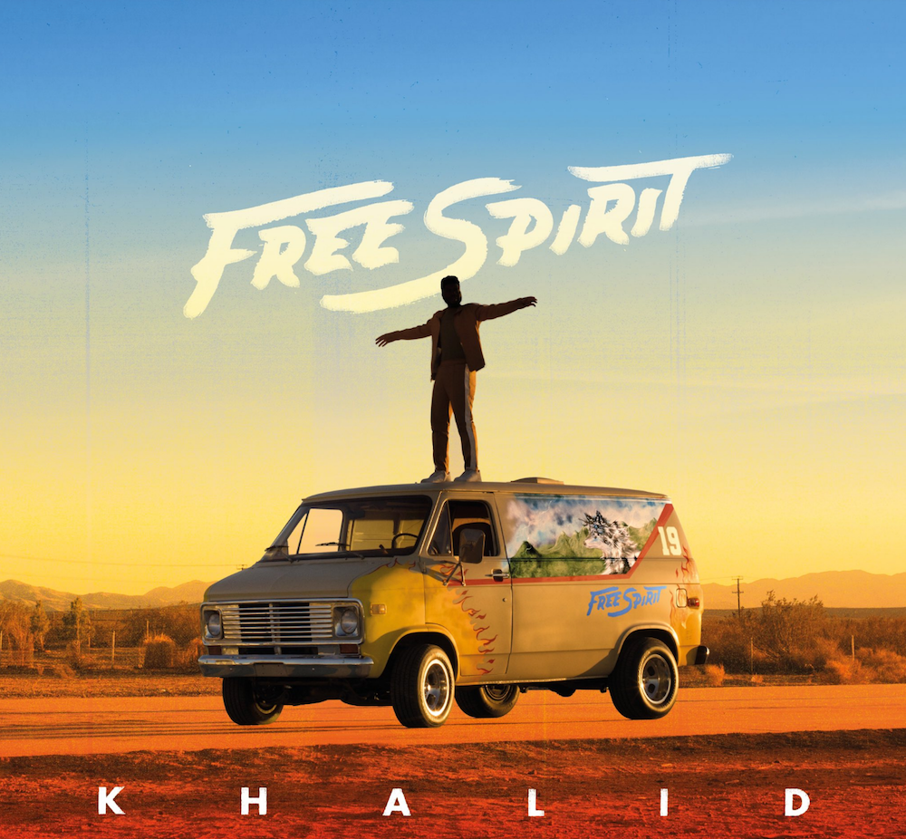
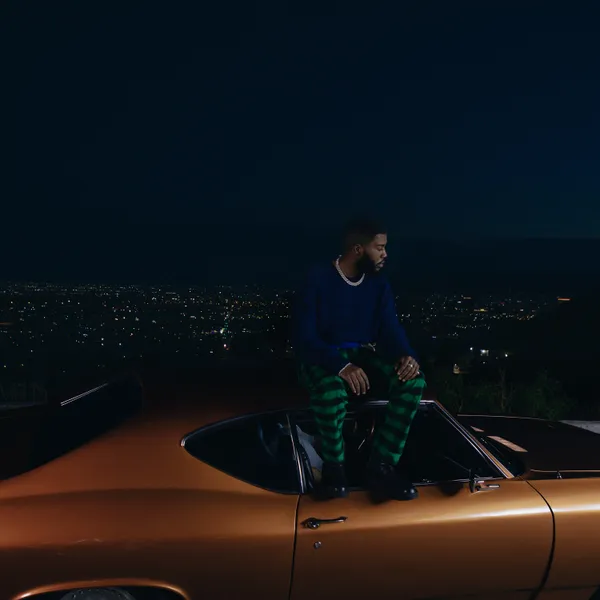

Khalid's Rise to Fame
It All Began in 2016
Khalid was only a senior in highscool when he uploaded his first song "Location" to Soundcloud. It was Kylie Jenner who brought attention to this song when she posted a video on Snapchat with the song playing in the background. It currently has about 114 million plays on Soundcloud.
His First Debut Album
On Jan. 31, 2017 Khalid tweets, "@thegreatkhalid: March 3. My debut album. The day my life changes forever." The debut album, American Teen was released, making him the next superstar sensation. The album included 15 songs all written by Khalid himself with no features.
First Television Debut
For the first time ever, Khalid performed "Location" on The Tonight Show Starring Jimmy Fallon, on March 15, 2017

First National Tour
Janurary 12, 2017 kicks off the first show of Khalid's first ever tour. He toured 21 cities and sold out every show.

Collaborations
A discography of features started to build for Khalid in 2017. His first feature was on Marshmello's song "Silence." He was also featured on Logic's song, "1-800-237-8255", with Alessia Cara, Calvin Harris' "Rollin'", and a remix of Lorde's "Homemade Dynamite."


First EP
Released on October 19, 2018, was Khalid's first EP. This EP included 7 songs dedicated to the love he has for his homeotown El Paso, Texas.
Second Studio Album
Free Spirit is Khalid's second album that was released on April 5, 2019. It includes features with SAFE and John Mayer. In 2019 Khalid also held his second tour called, "Free Spirit World Tour" where he toured with guest, Clario.


Second EP
Khalid is not slowing down any time soon. He has recently just came out with his second EP, Scenic Drive (The Tape) on December 3, 2021. It includes 9 tracks with various featured artists.